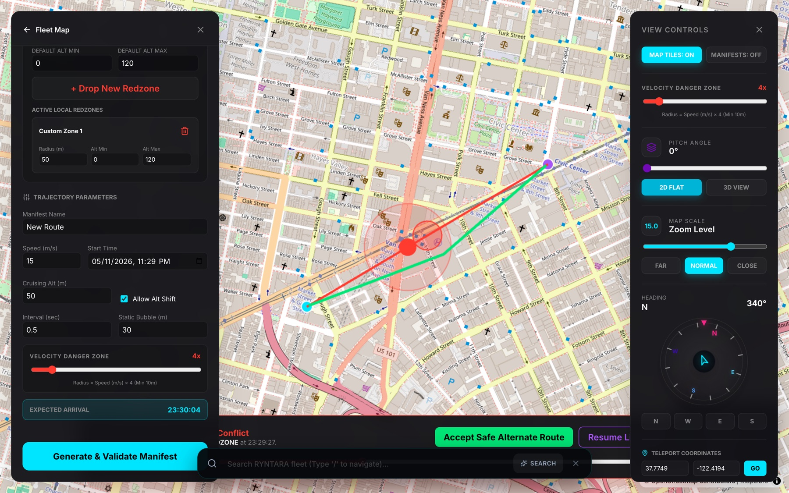
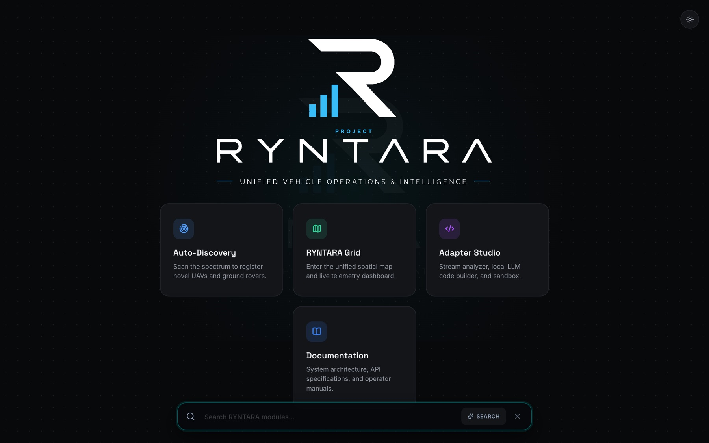

Coordinate drones and rovers from one map.
RYNTARA is a vehicle-independent coordination and runtime safety framework. It takes telemetry in whatever format each vehicle speaks, shows the whole fleet live, and checks planned routes against redzones and other traffic before they are approved.
/planA route crosses a 50 m redzone. The planner rejects it and offers a safe alternate, which the operator accepts.From a raw packet to an approved route
Every vehicle talks differently. RYNTARA puts a small Python adapter in front of each protocol, so everything after it works with one schema.
Vehicle
Broadcasts telemetry over UDP in its own format, on its own port.
Adapter
A Python script bound to that port turns each packet into the shared schema. Only one adapter can hold a port.
Ground station
Spring Boot supervises the adapters, publishes parsed lines to Redis and keeps history in PostgreSQL.
Fleet map
The dashboard subscribes over WebSocket and draws every vehicle on a 3D MapLibre and deck.gl map.
Planner
New manifests are checked against redzones and live traffic. A conflicting route gets an A* alternate.
What the drone sends · UDP 14555
{
"header": "CUSTOM_PROPRIETARY_V2",
"uav_id": "OSLO-UAV-04",
"telemetry": {
"loc": [59.922153, 10.757846],
"alt_m": 122.8, "yaw": 124.4
},
"pwr": { "bat_pct": 98, "temp_c": 44.8 },
"velocity_kts": 16.6
}
What the fleet sees · after multiple_drones_adapter.py
{
"vehicle_id": "OSLO-UAV-04",
"latitude": 59.922153,
"longitude": 10.757846,
"altitude": 122.8,
"battery_level": 98,
"heading_deg": 124.4
}
The operator's console
A React dashboard for watching the fleet, planning routes and bringing new vehicles online.
Live fleet map
Each registered vehicle shows its latest position, altitude, battery and heading as packets arrive. Tilt the map into 3D, size a danger zone from a vehicle's speed, trace its path, or jump to any coordinate.
/manageHistory and replay
Open a vehicle to follow it with a telemetry inspector. Scrub back through its stored path, then return to live.
/vehicle/CUSTOM-DRONE-99Route planning
Drop a start, an end and any local redzones, then set speed, cruising altitude and safety bubble. The planner checks the manifest against stored redzones and every other vehicle's waypoints.
rejected path safe alternate

/planThe alternate comes with an expected arrival time.Adapter Studio
Write an adapter in the browser. Listen to the raw UDP stream on a port, run your parser against it, and see every parsed line checked against the fleet schema. A local Ollama model can draft the first version for you.
/studioAuto-discovery
Pick an adapter and probe the network. RYNTARA lists the vehicles it hears that aren't registered yet. Name them, pick a category, register, and they appear on the map.
/add-vehiclePHASE
Physics-based Hierarchical Adaptive Spatial Evasion. Rather than solving every interaction as one global planning problem, PHASE spends more computation only as a conflict gets more serious. RYNTARA ships a derived version of the research algorithm.
- Localized A* planningEach vehicle plans inside a local frame that only includes nearby agents.
- Conflict detectionSeparation is checked against each vehicle's safety margin.
- Priority-weighted evasionVehicles sidestep based on heading, conflict geometry, goal direction and priority.
- Constraint resolutionAn iterative correction removes overlaps left by discrete time steps.
- Commit and replanPositions are committed and A* replans from where each vehicle actually is.
Priority times velocity. A heavy, fast vehicle holds its line; a light one gives way.
| Vehicles and obstacles | 19 / 5 |
| Reached their goal | 19 of 19 |
| Evasion events | 157 |
| Last arrival | 51.8 s |
| Margin infractions | 1 (7.94 m of 8.00 m) |
Research reference: DOI 10.5281/zenodo.22260336. This implementation is for research and system development and makes no guarantee of collision-free operation without further validation.
What runs where
| Dashboard | React 18, MapLibre GL, deck.gl, Monaco editor, STOMP over SockJS | fleet-dashboard/ · :3000 |
|---|---|---|
| Ground station | Spring Boot 4 on Java 17+, JPA with Hibernate Spatial, WebSocket broker, adapter process manager | src/main/java · :8080 |
| Data | PostgreSQL + PostGIS for the fleet and for planning, Redis for live telemetry | :5432 · :5433 · :6379 |
| Python | Vehicle adapters, the alternate-path planner and the PHASE simulator | Python_Files/ · Algorithms/ |
Run it locally
You need Docker, JDK 17 to 21, Node.js and Python 3.13.
- Start the databases and Redis
docker run -d -p 5432:5432 -e POSTGRES_PASSWORD=password -e POSTGRES_DB=fleet_db postgis/postgis:16-3.4 docker run -d -p 5433:5432 -e POSTGRES_PASSWORD=postgres -e POSTGRES_DB=fleet_planning_db postgis/postgis:16-3.4 docker run -d -p 6379:6379 redis:7
- Create the Python environment
python3.13 -m venv Python_Files/.venv Python_Files/.venv/bin/pip install numpy
- Start the ground station from the repository root
./mvnw spring-boot:run
It starts every adapter listed in
adapter_mounts.json. - Start the dashboard
cd fleet-dashboard && npm install && npm start
- Stream simulated vehicles
Python_Files/.venv/bin/python Python_Files/Python_Codes/mock_raw_data.py
Four vehicles appear at
localhost:3000/manage.

/The portal you land on.